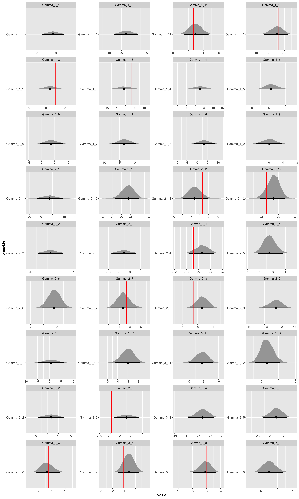

Choice models are common in marketing and other applications where researchers are interested in understanding both the drivers and trade-offs of choice. Since choice is typically manifest as a non-binary discrete outcome and we care about modeling consumer heterogeneity, a hierarchical Bayesian multinomial logit model is our default specification.
In marketing, choice models are often employed in conjunction with conjoint experiments, a survey-based approach to eliciting preferences where respondents choose from sets of hypothetical product alternatives. Because the conjoint experiment produces repeat observations at the respondent level, the groups in the hierarchical model are the respondents themselves.
In this post we will specify a choice model and seek to answer the following question: Does it matter if we use a centered or non-centered parameterization for a hierarchical multinomial logit model? We have previously explored using a non-centered parameterization for hierarchical regression and even argued that a non-centered parameterization should be our default approach in most applications. However, choice models used in practice employ a centered parameterization almost exclusively.
We will specify and compare performance of a centered parameterization and a non-centered parameterization of a hierarchical multinomial logit model estimated using Hamilton Monte Carlo (HMC) via Stan. Stan automates the required computation for many models and HMC is particularly verbose regarding model diagnostics. I am indebted to early tutorials on this topic by Elea Feit and Kevin Van Horn and Jim Savage.
Centered parameterization
Let’s start with a centered parameterization of the hierarchical multinomial logit.
// Index values, hyperprior values, observations, and covariates.
data {
int<lower = 1> R; // Number of respondents.
int<lower = 1> S; // Number of choice tasks.
int<lower = 2> A; // Number of choice alternatives.
int<lower = 1> I; // Number of observation-level covariates.
int<lower = 1> J; // Number of population-level covariates.
real Gamma_mean; // Mean of population-level means.
real<lower=0> Gamma_scale; // Scale of population-level means.
real<lower=0> Omega_shape; // Shape of population-level scale.
real tau_mean; // Mean of population-level scale.
real<lower=0> tau_scale; // Scale of population-level scale.
int<lower = 1, upper = A> Y[R, S]; // Matrix of observations.
matrix[A, I] X[R, S]; // Array of observation-level covariates.
matrix[R, J] Z; // Matrix of population-level covariates.
}
// Parameters and hyperparameters.
parameters {
matrix[J, I] Gamma; // Matrix of population-level hyperparameters.
corr_matrix[I] Omega; // Population model correlation matrix hyperparameters.
vector<lower = 0>[I] tau; // Population model vector of scale hyperparameters.
matrix[R, I] Beta; // Matrix of observation-level parameters.
}
// Hierarchical multinomial logit.
model {
// Hyperpriors.
to_vector(Gamma) ~ normal(Gamma_mean, Gamma_scale);
Omega ~ lkj_corr(Omega_shape);
tau ~ normal(tau_mean, tau_scale);
// Population model and likelihood.
for (r in 1:R) {
Beta[r,] ~ multi_normal(Z[r,] * Gamma, quad_form_diag(Omega, tau));
for (s in 1:S) {
Y[r, s] ~ categorical_logit(X[r, s] * Beta[r,]');
}
}
}
We’ll save this Stan script as hmnl_centered.stan. In the data block, we have R respondents that each go through S choice tasks where each choice task has A choice alternatives to choose from. Thus there are R * S total observations where each observation takes on a value from 1 to A, the chosen alternative. At the observation level, the choice alternatives are defined by I covariates. These covariates are the attributes of the choice alternatives under consideration. At the population or group level, the respondents are defined by J covariates. These covariates are used to explain preference heterogeneity across respondents in the population and improve our ability to predict preferences.
The data block also includes the hyperprior values. These define our hyperpriors on the hyperparameters in the population-level model and can be more easily evaluated when specified as part of the data block rather than hard-coded in the model block. Finally, the observations are stored as a matrix Y where each of the R respondents’ S choices are stored as a row while the observation-level covariates X is an R x S array where each element is the A x I matrix of covariates specific to that respondent and choice task.
The parameters block includes the population-level hyperparameters Gamma or the coefficients associated with the population-level covariates Z, the population-level hyperparameters Omega and tau which are the accompanying correlation matrix and scale of the population-level model, and the observation-level parameters Beta. Again, because a conjoint experiment produces repeat observations at the respondent level, we get a set of these Beta parameters for each respondent. These parameters are often referred to as part-worth utilities or preference parameters in the conjoint literature as they describe the preferences each respondent has for each of the attributes that define the choice alternatives. Thus the hyperparameters are estimates of population preference heterogeneity.
The model block includes the specification of hyperpriors, using the hyperprior values specified in the data block, and the hierarchy of models: the population model on the Beta parameters and the observation model or likelihood on the observed choices Y. We use the helper function to_vector() to easily use a normal() hyperprior on the Gamma matrix. By decomposing the covariance matrix of the multivariate normal population model into a correlation matrix and a scale vector means we can use an LKJ hyperprior on the correlation matrix Omega and a normal hyperprior on the scale vector tau. We then reform the covariance matrix using quad_form_diag() as part of the multivariate population model. Note that categorical_logit() is the multinomial logit likelihood and that it must be used within nested for loops since it isn’t vectorized. Also note that since Beta is a matrix where each row is a vector of respondent-specific parameters, the vector output of multi_normal() is transposed as part of the likelihood.
Since Bayesian models are generative, we can translate this Stan script into data and generated quantities blocks and use Stan to generate data for us.
// Index values, hyperprior values, and covariates.
data {
int<lower = 1> R; // Number of respondents.
int<lower = 1> S; // Number of choice tasks.
int<lower = 2> A; // Number of choice alternatives.
int<lower = 1> I; // Number of observation-level covariates.
int<lower = 1> J; // Number of population-level covariates.
real Gamma_mean; // Mean of population-level means.
real<lower=0> Gamma_scale; // Scale of population-level means.
real<lower=0> Omega_shape; // Shape of population-level scale.
real tau_df; // Degrees of freedom of population-level scale.
matrix[A, I] X[R, S]; // Array of observation-level covariates.
matrix[R, J] Z; // Matrix of population-level covariates.
}
// Generate data according to the hierarchical multinomial logit.
generated quantities {
int<lower = 1, upper = A> Y[R, S]; // Matrix of observations.
matrix[J, I] Gamma; // Matrix of population-level hyperparameters.
corr_matrix[I] Omega; // Population model correlation matrix hyperparameters.
vector[I] tau; // Population model vector of scale hyperparameters.
matrix[R, I] Beta; // Matrix of observation-level parameters.
// Draw parameter values and generate data.
for (j in 1:J) {
for (i in 1:I) {
Gamma[j, i] = normal_rng(Gamma_mean, Gamma_scale);
}
}
for (i in 1:I) {
tau[i] = chi_square_rng(tau_df);
}
Omega = lkj_corr_rng(I, Omega_shape);
for (r in 1:R) {
Beta[r,] = multi_normal_rng(Z[r,] * Gamma, quad_form_diag(Omega, tau))';
for (s in 1:S) {
Y[r, s] = categorical_logit_rng(X[r, s] * Beta[r,]');
}
}
}
We’ll save this Stan script as generate_data.stan. While providing the covariate matrices X and Z in data, largely because this is more straightforward to generate in R, we are generating hyperparameter and parameters values in generated quantities. This includes using the LKJ hyperprior to generate the values of the correlation matrix Omega. However, instead of using a normal hyperprior to generate the scale vector hyperparameters tau, we use a Chi-square to ensure positive values. Once again, since Beta is a matrix where each row is a vector of respondent parameters, the vector output of multi_normal_rng() is transposed. Note that while sampling statements like ~ normal() from the model block of the estimation code are vectorized, none of the corresponding RNG statements like = normal_rng() are, hence all of the additional for loops in the corresponding generated quantities block in generate_data.stan.
In an R script, let’s load the necessary packages, allow Stan to use as many cores as we have available and save compiled code, and specify the structure of the data and the hyperprior values.
# Load packages.
library(tidyverse)
library(rstan)
library(bayesplot)
library(tidybayes)
# Set Stan options.
options(mc.cores = parallel::detectCores())
rstan_options(auto_write = TRUE)
# Specify data and hyperprior values.
sim_values <- list(
R = 500, # Number of respondents.
S = 10, # Number of choice tasks.
A = 4, # Number of choice alternatives.
L = c(3, 4, 5), # Number of levels in each discrete attribute.
I = 12, # Number of estimable attribute levels, including the brand intercept.
J = 3, # Number of population-level covariates.
Gamma_mean = 0, # Mean of population-level means.
Gamma_scale = 5, # Scale of population-level means.
Omega_shape = 2, # Shape of population-level scale.
tau_df = 2 # Degrees of freedom of population-level scale.
)
Here sim_values is close to the data input for using generate_data.stan. These are typical dimensions for a conjoint experiment with R = 500 respondents, S = 10 choice tasks, A = 4 choice alternatives, and I = 12 estimable attribute levels. One important difference from the data block is that we’ve included an additional variable L that specifies the number of levels in each discrete attribute. In conjoint experiments, most of the attributes are discrete. We want to keep track of which of the simulated attributes are discrete, by design appearing before any continuous attributes, so we can easily impose dummy coding by dropping the first level of each attribute. The first attribute is typically the brand of the product and rather than including an intercept, we will allow for all brand levels to be present, thus creating a “brand intercept” where everything for a given product alternative not explained by the associated attributes is included in the brand.
Thus I, the number of estimable attribute levels, will be the number of brand levels plus the number of levels for the remaining attribute levels minus the hold-out level for each attribute plus the number of any continuous attributes. Since I = 12 and there are three brands, L[1] = 3, we have specified two continuous attributes, as follows.
# Array of observation-level covariates.
X <- array(
NA,
dim = c(sim_values$R, sim_values$S, sim_values$A, sim_values$I)
)
for (r in 1:sim_values$R) {
for (s in 1:sim_values$S) {
# Discrete predictors.
X_s <- NULL
for (l in 1:length(sim_values$L)) {
X_l <- NULL
for (a in 1:sim_values$A) {
X_a <- matrix(0, nrow = 1, ncol = sim_values$L[l])
X_a[1, sample(seq(1, sim_values$L[l]), 1)] <- 1
if (l == 1) X_l <- rbind(X_l, X_a)
if (l != 1) X_l <- rbind(X_l, X_a[, -1])
}
X_s <- cbind(X_s, X_l)
}
# Continuous predictors.
L_n <- sim_values$I - (sum(sim_values$L) - length(sim_values$L) + 1)
if(L_n != 0) {
X_s <- cbind(X_s, matrix(rnorm(sim_values$A * L_n), ncol = L_n))
}
X[r, s, , ] <- X_s
}
}
sim_values$X <- X
We can check the design matrix for the first respondent to ensure we have 12 estimable attribute levels, including the brand intercept and two continuous variables.
sim_values$X[1,1,,]
[,1] [,2] [,3] [,4] [,5] [,6] [,7] [,8] [,9] [,10] [,11] [,12]
[1,] 1 0 0 0 0 1 1 0 0 0 1.4235293 -1.1998511
[2,] 1 0 0 0 0 1 0 0 0 0 -0.7737283 0.3324931
[3,] 0 0 1 1 0 0 0 0 0 0 -0.2326687 1.4514409
[4,] 1 0 0 0 1 0 0 0 0 1 -1.0825479 1.1937547
Now we can generate the covariate matrix Z and then generate the remainder of our data according to the hierarchical multinomial logit by calling generate_data.stan.
# Matrix of population-level covariates.
Z <- cbind(
rep(1, sim_values$R),
matrix(
runif(sim_values$R * (sim_values$J - 1), min = 2, max = 5),
nrow = sim_values$R
)
)
sim_values$Z <- Z
# Generate data.
sim_data <- stan(
file = here::here("Code", "generate_data.stan"),
data = sim_values,
iter = 1,
chains = 1,
seed = 42,
algorithm = "Fixed_param"
)
# Extract simulated data and parameters.
sim_Y <- extract(sim_data)$Y[1,,]
sim_Gamma <- extract(sim_data)$Gamma[1,,]
sim_Omega <- extract(sim_data)$Omega[1,,]
sim_tau <- extract(sim_data)$tau[1,]
sim_Beta <- extract(sim_data)$Beta[1,,]
Now let’s estimate our model by calling hmnl_centered.stan.
data <- list(
R = sim_values$R, # Number of respondents.
S = sim_values$S, # Number of choice tasks.
A = sim_values$A, # Number of choice alternatives.
I = sim_values$I, # Number of observation-level covariates.
J = sim_values$J, # Number of population-level covariates.
Gamma_mean = 0, # Mean of population-level means.
Gamma_scale = 5, # Scale of population-level means.
Omega_shape = 2, # Shape of population-level scale.
tau_mean = 0, # Mean of population-level scale.
tau_scale = 5, # Scale of population-level scale.
Y = sim_Y, # Matrix of observations.
X = sim_values$X, # Array of observation-level covariates.
Z = sim_values$Z # Matrix of population-level covariates.
)
fit_centered <- stan(
file = here::here("Code", "hmnl_centered.stan"),
data = data,
iter = 4000,
thin = 2,
seed = 42
)
Chain 4: Elapsed Time: 21419.5 seconds (Warm-up)
Chain 4: 23963 seconds (Sampling)
Chain 4: 45382.5 seconds (Total)
Chain 4:
Warning messages:
1: There were 311 divergent transitions after warmup. See
http://mc-stan.org/misc/warnings.html#divergent-transitions-after-warmup
to find out why this is a problem and how to eliminate them.
2: There were 3689 transitions after warmup that exceeded the maximum treedepth. Increase max_treedepth above 10. See
http://mc-stan.org/misc/warnings.html#maximum-treedepth-exceeded
3: There were 4 chains where the estimated Bayesian Fraction of Missing Information was low. See
http://mc-stan.org/misc/warnings.html#bfmi-low
4: Examine the pairs() plot to diagnose sampling problems
5: The largest R-hat is NA, indicating chains have not mixed.
Running the chains for more iterations may help. See
http://mc-stan.org/misc/warnings.html#r-hat
6: Bulk Effective Samples Size (ESS) is too low, indicating posterior means and medians may be unreliable.
Running the chains for more iterations may help. See
http://mc-stan.org/misc/warnings.html#bulk-ess
7: Tail Effective Samples Size (ESS) is too low, indicating posterior variances and tail quantiles may be unreliable.
Running the chains for more iterations may help. See
http://mc-stan.org/misc/warnings.html#tail-ess
Estimating the model gives us more than 300 divergent transitions. Recall that a divergent transition or divergence is a unique HMC diagnostic that identifies problems navigating the posterior distribution. These difficulties with posterior geometry are true regardless of the sampler, but HMC makes the issue more transparent. We continue to see divergences even if we set adapt_delta = 0.99 as we’ve done with hierarchical models previously. There are also warnings suggesting we run the chains for longer. Even up to iter = 10000, five times the default 2000 draws, we see the same problems.
Regardless, the fact that we run into divergences when using simulated data with typical conjoint experiment dimensions says that in order to produce a posterior geometry that can be navigated, we need to reparameterize our model.
Non-centered parameterization
A non-centered parameterization re-expresses the population model and likelihood for a hierarchical model by including an intermediate, deterministic transformation on a set of the hyperparameters. The benefit is that difficult dependencies between the layers in the hierarchy are broken, producing a simpler posterior geometry. See a previous post for a walkthrough of the re-parameterization using a simplified population model as part of a hierarchical linear model.
Let’s see a non-centered parameterization of the hierarchical multinomial logit.
// Index values, hyperprior values, observations, and covariates.
data {
int<lower = 1> R; // Number of respondents.
int<lower = 1> S; // Number of choice tasks.
int<lower = 2> A; // Number of choice alternatives.
int<lower = 1> I; // Number of observation-level covariates.
int<lower = 1> J; // Number of population-level covariates.
real Gamma_mean; // Mean of population-level means.
real<lower=0> Gamma_scale; // Scale of population-level means.
real<lower=0> Omega_shape; // Shape of population-level scale.
real tau_mean; // Mean of population-level scale.
real<lower=0> tau_scale; // Scale of population-level scale.
int<lower = 1, upper = A> Y[R, S]; // Matrix of observations.
matrix[A, I] X[R, S]; // Array of observation-level covariates.
matrix[R, J] Z; // Matrix of population-level covariates.
}
// Parameters and hyperparameters.
parameters {
matrix[J, I] Gamma; // Matrix of population-level hyperparameters.
corr_matrix[I] Omega; // Population model correlation matrix hyperparameters.
vector<lower = 0>[I] tau; // Population model vector of scale hyperparameters.
matrix[R, I] Delta; // Matrix of non-centered observation-level parameters.
}
// Deterministic transformation.
transformed parameters {
// Matrix of centered observation-level parameters.
matrix[R, I] Beta;
// Non-centered parameterization.
for (r in 1:R) {
Beta[r,] = Z[r,] * Gamma + Delta[r,] * quad_form_diag(Omega, tau);
}
}
// Hierarchical multinomial logit model.
model {
// Hyperpriors.
to_vector(Gamma) ~ normal(Gamma_mean, Gamma_scale);
Omega ~ lkj_corr(Omega_shape);
tau ~ normal(tau_mean, tau_scale);
// Non-centered population model and likelihood.
for (r in 1:R) {
Delta[r,] ~ normal(0, 1);
for (s in 1:S) {
Y[r, s] ~ categorical_logit(X[r, s] * Beta[r,]');
}
}
}
We’ll save this Stan script as hmnl_noncentered.stan. We now have the Delta hyperparameters in place of Beta in the parameters block, a transformed parameters block that introduces the Beta hyperparameters and imposes the deterministic non-centered parameterization, and now a standard normal population model in the model block.
The generated data doesn’t change, so we can go ahead and estimate our model by calling hmnl_noncentered.stan.
data <- list(
R = sim_values$R, # Number of respondents.
S = sim_values$S, # Number of choice tasks.
A = sim_values$A, # Number of choice alternatives.
I = sim_values$I, # Number of observation-level covariates.
J = sim_values$J, # Number of population-level covariates.
Gamma_mean = 0, # Mean of population-level means.
Gamma_scale = 5, # Scale of population-level means.
Omega_shape = 2, # Shape of population-level scale.
tau_mean = 0, # Mean of population-level scale.
tau_scale = 5, # Scale of population-level scale.
Y = sim_Y, # Matrix of observations.
X = sim_values$X, # Array of observation-level covariates.
Z = sim_values$Z # Matrix of population-level covariates.
)
# Calibrate the model.
fit_noncentered <- stan(
file = here::here("Code", "hmnl_noncentered.stan"),
data = data,
iter = 4000,
thin = 2,
seed = 42
)
The model runs without divergences! There also aren’t any diagnostic warnings, beyond an initial suggestion for longer chains, hence we added iter = 4000. For convenience, we also thin the posterior draws with thin = 2 to reduce the size of the model output and to keep the dimensions consistent with the default 2000 draws.
We can also visually check model performance by first considering the trace plots. Given the number of parameters (500 x 12), we will only consider the hyperparameters.
# Check population model trace plots.
gamma_string <- str_c("Gamma[", 1:data$J, ",", 1, "]")
omega_string <- str_c("Omega[", 1:data$I, ",", 1, "]")
tau_string <- str_c("tau[", 1:data$I, "]")
for (i in 2:data$I) {
gamma_temp <- str_c("Gamma[", 1:data$J, ",", i, "]")
gamma_string <- c(gamma_string, gamma_temp)
omega_temp <- str_c("Omega[", 1:data$I, ",", i, "]")
omega_string <- c(omega_string, omega_temp)
}
# Gamma.
fit_noncentered %>%
mcmc_trace(
pars = gamma_string,
n_warmup = 500,
facet_args = list(
ncol = 4,
labeller = label_parsed
)
)

# Omega.
fit_noncentered %>%
mcmc_trace(
pars = omega_string,
n_warmup = 500,
facet_args = list(
ncol = 4,
labeller = label_parsed
)
)

Note that the diagonal in a correlation matrix is fixed to 1.
# tau.
fit_noncentered %>%
mcmc_trace(
pars = tau_string,
n_warmup = 500,
facet_args = list(
ncol = 4,
labeller = label_parsed
)
)
Now let’s demonstrate parameter recovery.
# Recover Gamma values.
gamma_values <- tibble(
j = sort(rep(1:(data$J), data$I)),
i = rep(1:(data$I), data$J),
.variable = str_c("Gamma", "_", j, "_", i),
values = as.vector(t(matrix(sim_Gamma, ncol = data$I)))
) %>%
select(.variable, values)
fit_noncentered %>%
gather_draws(Gamma[j, i]) %>%
unite(.variable, .variable, j, i) %>%
ggplot(aes(x = .value, y = .variable)) +
geom_halfeyeh(.width = .95) +
geom_vline(aes(xintercept = values), gamma_values, color = "red") +
facet_wrap(
~ .variable,
ncol = 4,
scales = "free"
)

# Recover Omega values.
omega_values <- tibble(
j = sort(rep(1:(data$I), data$I)),
i = rep(1:(data$I), data$I),
.variable = str_c("Omega", "_", j, "_", i),
values = as.vector(t(matrix(sim_Omega, ncol = data$I)))
) %>%
select(.variable, values)
fit_noncentered %>%
gather_draws(Omega[j, i]) %>%
unite(.variable, .variable, j, i) %>%
ggplot(aes(x = .value, y = .variable)) +
geom_halfeyeh(.width = .95) +
geom_vline(aes(xintercept = values), omega_values, color = "red") +
facet_wrap(
~ .variable,
ncol = 4,
scales = "free"
)
Once again, the diagonal in a correlation matrix is fixed at 1.
# Recover tau values.
tau_values <- tibble(
i = 1:(data$I),
.variable = str_c("tau", "_", i),
values = as.vector(sim_tau)
) %>%
select(.variable, values)
fit_noncentered %>%
gather_draws(tau[i]) %>%
unite(.variable, .variable, i) %>%
ggplot(aes(x = .value, y = .variable)) +
geom_halfeyeh(.width = .95) +
geom_vline(aes(xintercept = values), tau_values, color = "red") +
facet_wrap(
~ .variable,
ncol = 4,
scales = "free"
)
While we have some difficulty recovering the variance parameters in our covariance matrix decomposition, which is typical, we can see that beyond HMC model diagnostics we have both good convergence and parameter recovery for our many hyperparameters.
Final thoughts
Does it matter if we use a centered or non-centered parameterization for a hierarchical multinomial logit model? Yes. Based on HMC model diagnostics and using simulated data typical of a conjoint experiment, the centered parameterization is not sufficient. Additionally, though our primary concern isn’t computational efficiency, with both models running for 4000 iterations, the centered parameterization took 12 and a half hours to run while the non-centered parameterization took 5 hours to run.
This difference in choice model parameterizations is a concern because the centered parameterization is used almost exclusively in practice. However, since HMC isn’t as widespread, the diagnostics accompanying other estimation paradigms might not indicate any problems. This post doesn’t go so far as to establish the edge cases of when either parameterization might work best or consider how wrong the centered parameterization is. Regardless, given the savings in computation time and the evidence presented using simulated data, the non-centered parameterization should be our default approach in choice modeling.
Marc Dotson
Marc is an assistant professor of marketing at the BYU Marriott School of Business. He graduated with an MSc from The London School of Economics and Political Science in 2009 and a PhD from The Ohio State University in 2016. His research interests include Bayesian inference, predictive modeling, consumer preference heterogeneity, and unstructured data. Marc teaches marketing analytics. You can find him on Twitter and GitHub.